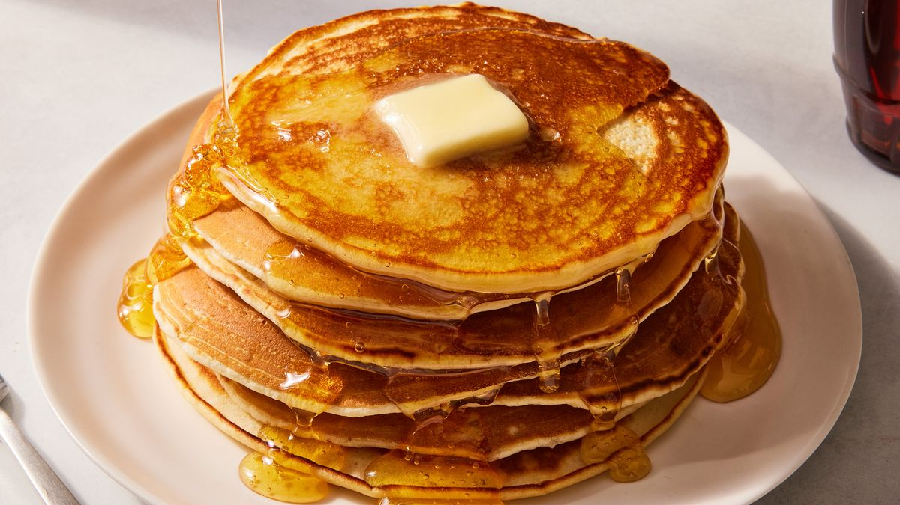

Fluffy Flapjack Pancakes

Buttery, soft pancakes!
These flapjack pancakes are quick, easy, and turn out fluffy every time. The recipe can be easily adjusted to your dietary needs, too. I have tried many recipes; this one is simple, yummy, and fail-proof! A word of caution: they're very filling.
Ingredients
- 2 cups all purpose flour
- 3 tablespoons white sugar
- 2 teaspoons baking powder
- 1 teaspoon baking soda
- 1/2 teaspoon salt
- 2 cups milk
- 2 eggs
- 1/4 cup canola oil
- cooking spray
Directions
- Step1 : Gather all ingredients
- Step 2: Whisk together flour, sugar, baking powder, baking soda, and salt in a bowl until no lumps remain
- Step 3: Add milk, eggs, and oil; whisk until batter is runny and smooth
- Step 4: Heat a nonstick griddle over medium heat and lightly coat with cooking spray
- Step 5: Working in batches, ladle a generous 1/4 cup batter for each pancake onto the preheated grill and cook until bubbles appear, 3 to 4 minutes. Flip and cook, pressing middle gently with the spatula, until bottom is lightly browned, 2 to 3 minutes more. Repeat with remaining batter
- Step 6: Serve and enjoy!